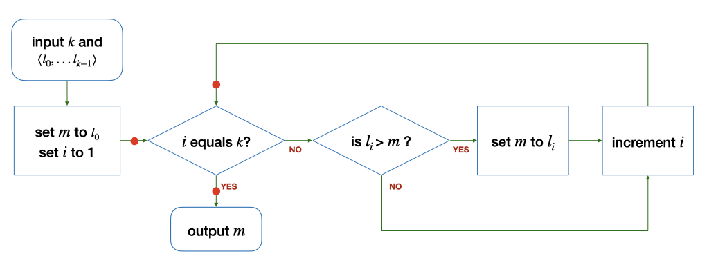
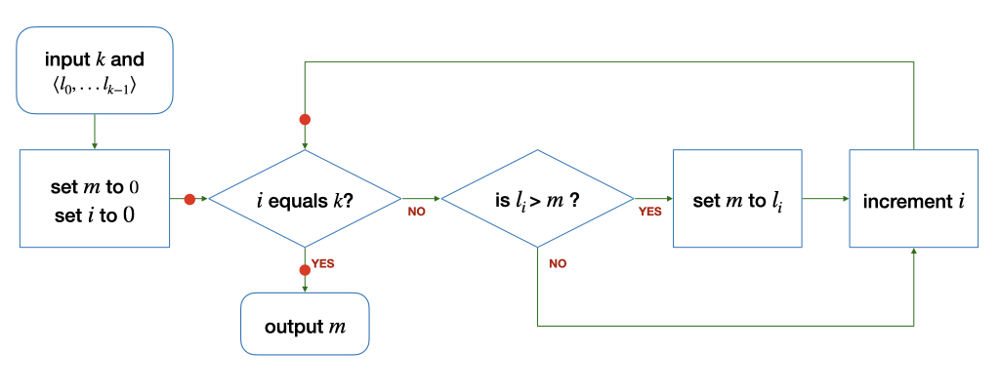

Unit 12: Reasoning About Loops with Invariants
Learning Objectives
After this unit, students should:
- understand how assertions can be derived in a loop;
- understand how assertions can help us understand the behavior of a loop;
- understand what is a loop invariant;
- be able to argue why a given loop invariant is true;
- be able to derive a simple loop invariant of a given loop.
Is A Loop Correct?
We have seen how we can use assertions to reason about the state of our program at different points of execution for conditional if-else statements. We can apply the same techniques to loops. Consider a variation of our factorial function below:
| Calculating factorial of a number using while loop | |
|---|---|
1 2 3 4 5 6 7 8 9 10 | |
Unlike the one we have seen in the previous unit, this simpler version computes the factorial starting from i = 1, 2, 3, up to n.
Before we continue, let's label a few critical points of execution in the code with A - E:
| Calculating factorial of a number using while loop | |
|---|---|
1 2 3 4 5 6 7 8 9 10 11 12 13 14 15 | |
We want to check if the code correctly computes the factorial of n. In other words, we want to be able to assert at Line E that { product == n! }. Let's see if we can do that by writing down the assertions at Lines A - E, relating product, i, and n.
To do so, it is important to first understand what the loop in the code above is computing. The loop is accumulating partial result of factorial of n into product. At each loop, it computes product to be i!. To show that the assertion { product == n! } is true at Line E, we first need to show that { product == i! } is true at Line D, i.e., at the end of every iteration.
First Iteration
Let us show that { product == i! } for the first iteration. The first time we enter the loop, i is 1 and product is 1 at Line B. At Line C, i becomes 2. At Line D, we have multiplied i into product, so product becomes 2. The assertion { product == i! } is true at Line D at the end of the first iteration.
Every Iteration
Now, let's consider the second iteration. Since the assertion { product == i! } is true at Line D at the end of the first iteration, and the variables product and i haven't changed, we can assert that { product == i! } is true at Line B at the beginning of the second iteration. You can substitute the value of i and trace through the body of the loop, and see that, at the end of the second iteration, at Line D, the assertion { product == i! } still holds.
We could do this for the third iteration, fourth iteration, and so on. But, we would not be able to show that the assertion holds at the end of every iteration for any n.
A more succinct way to show that the assertion holds for every iteration is to use wishful thinking. To show that { product == i! } at the end of every loop, we only need to show that:
- the assertion holds at the end of the first loop;
- if the assertion holds at the end of the \(k\)-th loop, then, it holds at the end of the \((k+1)\)-th loop.
We have already shown that the assertion holds after the first iteration. So, let's assume that the assertion holds at the end of the \(k\)-th iteration. At the beginning of the \((k+1)\)-iteration, we know that { product == i! } is true, since it is true at the end of the previous iteration. Now consider what happens when we increment i at Line 8. At Line C, the assertion { product == i! } is no longer true. Instead, since i is one more than before, we now have { product == (i-1)! }.
Next, on Line 10, we set product to product * i, i.e., (i-1)! * i, which is just i!. So, we get { product == i! } again at Line D of the \(k+1\) iteration.
After The Loop
We have shown that { product == i! } at Line D. Now, let's consider what happens when we eventually exit the loop. Between Line D and Line E, the variables product and i remain the same. So, we can still assert { product == i! }.
Additionally, since we exited the loop, we know that { i == n }. Putting the two together, we have { product == n! } at Line E.
Before The Loop
We showed that the code correctly computes n! if it enters the loop. One last thing for us to check is that the code is correct even if it does not enter the loop. In this case, the execution goes from Line A to Line E directly.
Assuming that n is non-negative, we have two cases where this could happen: both i and n are 1, or n is 0. In either case, We can assert that { product == n! } at Line E. So the code is still correct even if we do not enter the loop!
The way we argue that { product == i! } is true above is similar to a mathematical proof technique called proof by induction. Induction is taught in CS1231. We do not require you to give a formal proof in CS1010, however.
Here is the code again, with annotated assertions
| Calculating factorial of a number using while loop (with assertion) | |
|---|---|
1 2 3 4 5 6 7 8 9 10 11 12 13 14 15 16 17 | |
Loop Invariant
In the last unit, we say that there are five questions that we have to think about when designing loops. But we only talked about four at that time. The fifth question is: what is the loop invariant? A loop invariant is an assertion that is true before the loop, after each iteration of the loop, and after the loop. Thinking about the loop invariant is helpful to convince ourselves that a loop is correct, or to identify bugs in a loop.
In the example above, { product == i! } is an invariant, since it is true before the loop (Line A), after each iteration of the loop (Line D), and after the loop (Line E).
To argue that an invariant is true, we can use the same approach above, i.e., we need to argue that:
- it is true before entering the loop.
- it is true at the end of the first iteration of the loop
- if it is true at the end of the \(k\)-th iteration of the loop, then it is true at the end of the \((k+1)\)-th iteration.
- it is true when we exit the loop.
When is an Invariant Useful
As we have seen in the example above, an invariant is useful thinking and reasoning tool to help us convince ourselves that our loop behaves correctly (e.g., { product == n! }).
Loop invariant, however, is not unique. We can write down infinitely many loop invariants. A good invariant, however, will lead us to an assertion that we want to see (e.g., relating product to n). We can derive other invariants in our code (such as { n != 0 } below) that do not contribute to the reasoning of the behavior of our loop. Such invariants should be avoided.
1 2 3 4 5 6 7 8 9 10 11 12 13 14 15 16 | |
Problem Set 12
Problem 12.1
(a) Consider the algorithm to find the maximum among a list of integers \(L\) with at least one element (\(k > 0\)) below:

The loop invariant for this loop must hold at the three points marked with the red dots: before the loop, after each iteration of the loop, and after the loop.
State the loop invariant, explain why it holds at the three points above, and threfore argue that the loop above correctly finds the maximum among the elements of the list \(L\).
(b) Now, consider a slightly different algorithm to find the maximum among a list of integers \(L\) with at least one element (\(k > 0\)) below:

Explain why you cannot find a loop invariant similar to Part (a) above, and therefore show that the algorithm does not correctly find the maximum in certain cases.